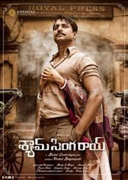

I am from Andhra Pradesh, India. I like Cooking, Dancing and Playing guitar. In my free time i like to design dresses for myself.
Shyam Singha Roy is a 2021 Indian Telugu-language period romantic drama film directed by Rahul Sankrityan from a story written by Janga Satyadev. The film stars Nani in a dual role alongside Sai Pallavi, Krithi Shetty and Madonna Sebastian. It is partly set in the backdrop of Kolkata in the 1970’s and it is based on the theme of reincarnation. I like the movie because, i am super connected to that story
